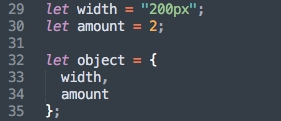
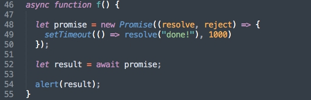
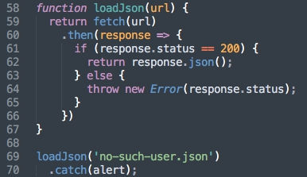
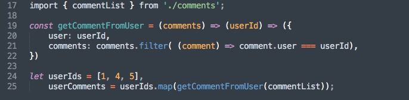

Создать два модуля: первый экспортирует default class с конструктором, который определяет в поле "num" сумму двух чисел (переданных в конструктор); второй - 2 константные переменные с произвольными числами. Протестировать оба модуля: импортировать их, создать объект класса из первого модуля с переменными из второго модуля.
Для использования модулей необходим Babel.
Proxy
Прокси (proxy) – объект, который перехватывает обращения к другому объекту и модифицирует их.
let proxy = new Proxy(target, handler)
target – объект-цель, обращение к которому будет перехвачено.
handler – объект-обработчик с методами-перехватчиками для модификации target.
Функции-перехватчики:
get
set
has
deleteProperty
enumerate
apply
construct
Полное описание тут
Написать код с использованием двух произвольных proxy с handler-функциями.
Функции
В ES6 введены такие возможности для написания функций:
Параметры по умолчанию
Оператор spread вместо arguments
Деструктуризация в параметрах
Функции в блоке имеет блочную область видимости
Функции стрелки => (не имеют arguments и this)
Коллекция Map
Map – простой ассоциативный массив (коллекция) для хранения записей вида ключ:значение.
let map = new Map()
map.set(key, value)
map.get(key)
map.size
map.delete(key)
map.clear()
map.has(key)
Итерирование в Map
map.keys()
map.values()
map.entries() - по умолчанию в for..of
forEach(value, key, map)
Коллекция Set
Set – коллекция для хранения множества значений, позволяют сохранять уникальные значения любого типа (каждое значение может встречаться лишь один раз).
let set = new Set()
set.add(item)
set.delete(item)
set.has(item)
set.clear()
set.size
Итерирование в Set
for..of
forEach(value, valueAgain, set)
Коллекции WeakMap и WeakSet
WeakSet – коллекция аналогичная Set, элементами которой могут быть только объекты. Ссылки на эти объекты в WeakSet являются слабыми: если на объект, хранимый в WeakSet нет ни одной внешней ссылки, то сборщик мусора удалит этот объект.
WeakMap - коллекция аналогичная Map. В качестве ключей могут быть использованы только объекты, а значения могут быть произвольных типов. Из-за того, что ссылки являются слабыми, нельзя перебрать элементы итератором или forEach.
Нет свойства size и clear().
Строки-шаблоны
Pазрешён перевод строки.
Шаблонный вод переменных при помощи ${ }.
Функции шаблонизации - f(strings, ...values), где:
strings - участки строки,
(присутствует strings.raw - участки строки без интерпретации)
values - переданные в строку-шаблон переменные.
Строчные методы ES6
str.includes(s)
str.endsWith(s)
str.startsWith(s)
str.repeat(times)
Написать функцию шаблонизатор, которая выполняет сложение и выводит ответ в формате "2 + 3 = 5", а также сохраняет пример и результат в Set/Map.
Нововведения в объекты ES6
Короткое свойство

Вычисляемые свойства
Методы - prop: function() {} → prop() {}
str.repeat(times)
Async/Await
Async/Await - синтакс JS для работы с асинхронными функциями. Он построен поверх Promises и совместим со всеми существующими API-интерфейсами на основе Promise.
async - объявляет асинхронную функцию (async function someName(){...})
Автоматически преобразует обычную функцию в Promise.
Функции async резолвят (resolve) всё, что возвращается в их теле.
Асинхронные функции позволяют использовать await.
await - приостанавливает выполнение функции (let result = await someAsyncCall();)
Работает только с Promise.
Может использоваться только внутри асинхронных функций.

Задание
Переписать используя async/await вместо then/catch.

Чистые функции
Когда функция детерминированная (всегда возвращает одинаковое значение при определённых аргументах) и не имеет побочных эффектов (не меняет значения из внешнего Sсope), она называется "чистая" функция.
Функции высшего порядка
Функция высшего порядка — это функция, удовлетворяющая хотя бы одному из условий:
Принимает другую функцию в качестве аргумента (колбэки)
Возвращает функцию при вызове
Преобразуем простую функцию в функцию высшего порядка:
=>

Карринг
Карринг (currying) или каррирование – термин функционального программирования, который означает создание новой функции путём фиксирования аргументов существующей.